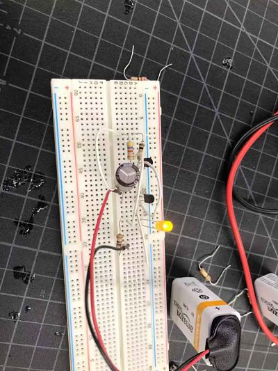
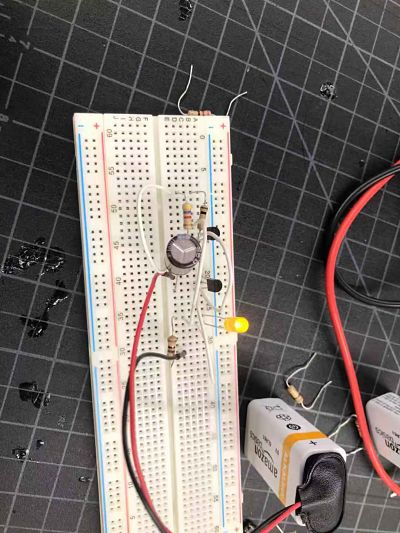
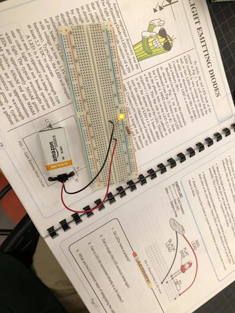
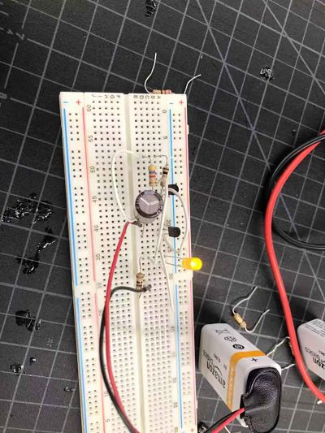

.jpg)
.jpg)
.jpg)
.jpg)
.jpg)
.jpg)
.jpg)
.jpg)
.jpg)
.jpg) 

.jpg)
.jpg)
This week we practice with electronics parts and learn the functions of these part. For example, we learn LED, resistor and etc. Then I made a clock.
I connect the part with a kind of metal that can be melted under certain temperature.
Ass 3: Capacitor: Stores electrical energy
Transistor: semiconductor device, capable of amplifying or switching electronic signals and electrical power
LED: Light Emitting Diode
Diode: two-terminal electronic component that conduct current in primarily one direction
Potentiometer: adjusts voltage
Breadboard: solderless board
Multimeter: combines several measurements functions
Switch: turns parts on and off
Ass 4:
Resistance = Voltage/Current. Resistance is the measure of opposition to a flow of electric current.
Voltage is the potential difference between two terminals. Current is the flow of electric charge.
AC: change the amplitude of current periodically
DC: Amplitude of current Stays constant
The eclock was not hard to make. I just follow the instruction and made it.

